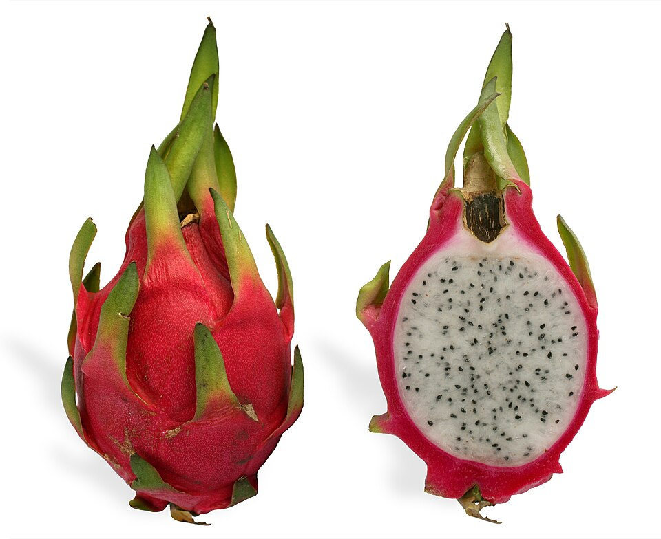
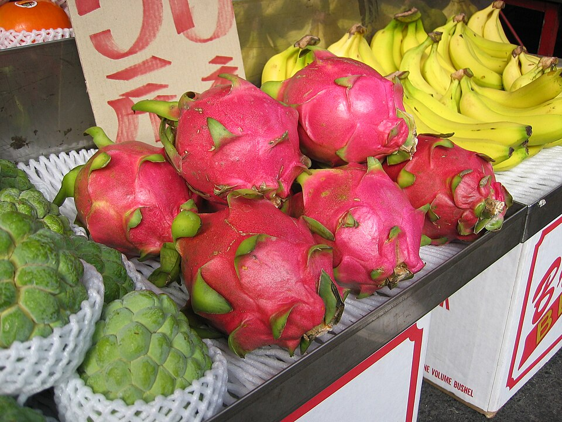
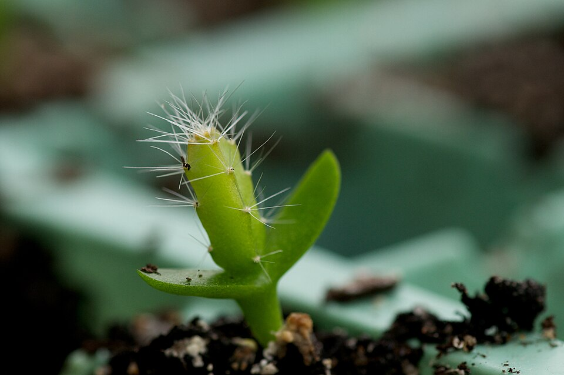
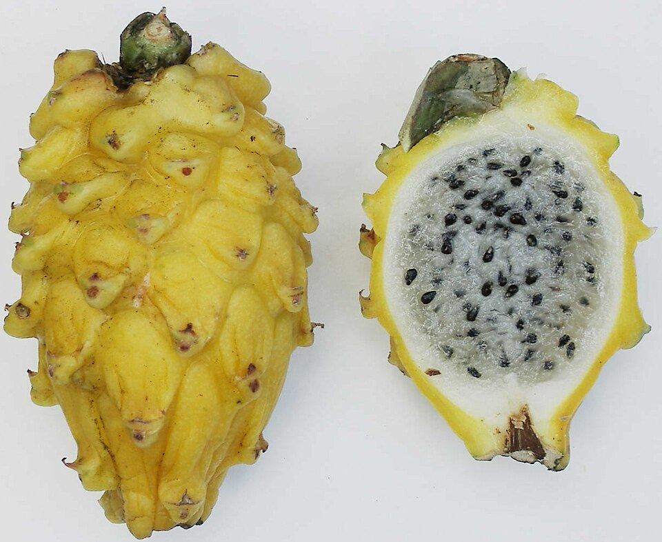

Pitaya (Dragon Fruit): an illustrated guide

Pitaya, pitahaya, strawberry pear, dragon fruit — one leathery-skinned, scale-covered fruit answers to all of these names. It grows on climbing cactus vines native to southern Mexico and the Pacific-facing coasts of Guatemala, El Salvador, and Costa Rica, and it has since spread to warm regions across the globe, from Vietnam and Thailand to Australia, Brazil, and the Mediterranean island of Madeira.
Crack one open and the drama is immediate: crisp, faintly sweet flesh — white, red, or occasionally speckled — studded with seeds that crunch like a kiwifruit’s. The outside tells a different story, a leather-like hide bristling with soft, flame-like scales that gave the fruit its English name. Depending on the species, that flesh can lean sweet or sharply sour, and the skin can glow pink, deep red, or butter yellow.
What’s in a Name?
Botanists split the common name along genus lines. Pitaya usually points to fruit from the genus Stenocereus, while pitahaya — and the popular English tag “dragon fruit” — belongs to Selenicereus, a genus still widely known by its older name, Hylocereus. Both sit inside the wider cactus family, Cactaceae.
The English nickname “dragon fruit” is younger than you might expect: it entered use only around 1963, inspired by the scaly, almost reptilian spikes ringing the fruit’s skin. Because Vietnam exports more of the fruit than any other country, it is often marketed specifically as “Vietnamese dragon fruit.” The Spanish-derived names pitahaya and pitaya trace back to Mexico and Central America, likely describing tall, fruit-bearing cactus species long before the fruit became a global export.
Species and Varieties
“Dragon fruit” is really a shorthand for several distinct cactus fruits. The sour pitayas, harvested from Stenocereus cacti native to Baja California, have long fed indigenous communities of the Sonoran Desert. The sweet pitayas — the fruit most shoppers know — come from the genus Selenicereus and arrive in three main forms.

The Three Sweet Pitayas
- Selenicereus undatus — Pitaya blanca
- Pink skin wrapped around mild, white flesh. This is the variety most often sold simply as “dragon fruit.”
- Selenicereus costaricensis — Pitaya roja
- Red skin and red flesh, colored by the pigment betalain, with a noticeably higher level of polyphenols than the white variety.
- Selenicereus megalanthus — Pitaya amarilla
- A knobbly yellow skin hiding sweet, white flesh; generally the smallest of the three.
A ripe fruit typically weighs between 150 and 600 grams, though exceptional specimens can top a full kilogram. Early Colombian imports into Australia were once mislabeled under names like “Cereus repandus” and “Cereus triangularis,” a mix-up that took years of botanical bookkeeping to untangle.
Sour Pitaya of the Desert
Away from the supermarket shelf, the sour pitaya (Stenocereus gummosus) grows wild across arid stretches of the Americas, valued for juicy, tart flesh rather than sweetness. Close relatives such as S. queretaroensis and the dagger cactus, S. griseus, are eaten locally too, while the organ pipe cactus (S. thurberi) produces what the Seri people call ool — the “sweet pitaya” of the sour-fruited group.
Origin and Spread
Pitaya’s home range is narrow: southern Mexico and the Pacific coastlines of Guatemala, Costa Rica, and El Salvador. From there, French colonists carried the plant to Indochina around 1860, planting the seed — literally — for Vietnam’s modern dragon fruit industry. Today the crop thrives across East, South, and Southeast Asia, the Caribbean, Australia, Brazil, the Portuguese island of Madeira, and any other pocket of the world warm enough to keep a cactus happy.

Commercial growers plant densely — roughly 1,100 to 1,350 plants per hectare — and wait. A new planting can take up to five years to reach full production, but a mature plantation can then yield 20 to 30 metric tons of fruit per hectare each year.
Growing Pitaya
Pitaya is forgiving enough to grow as a houseplant, yet particular enough that commercial growers treat it as a genuine crop science.
From Seed and Cutting
Seeds pulled from a fully ripe, slightly overripe fruit and dried can be stored, then sown shallowly into compost or potting soil. Germination usually takes 11 to 14 days. Because it is a cactus, overwatering is the most common way home growers kill a young plant. As the vine grows, it reaches for something to climb, sending out aerial roots along its stems in addition to the roots anchored in soil. A broken-off stem segment will often root on its own and grow into an entirely new plant — a shortcut many growers use instead of starting from seed.
Night-Blooming Flowers

A pitaya plant does not flower until it reaches a mature weight of around 4.5 kilograms, and when it finally does, the show is brief: flowers open at night and rely on bats and moths for pollination, then wilt again by evening. Some varieties are self-fertile, but cross-pollinating with a genetically distinct plant of the same species reliably produces more and better fruit. A single plant can flower between three and six times a year, depending on growing conditions.
Climate and Hardiness
Pitaya tolerates heat up to 40 °C and can shrug off a brief frost, but sustained freezing temperatures will kill it. It grows best in USDA hardiness zones 10–11, with some varieties surviving outdoors in the milder pockets of zone 9. Because it adapts so readily to dry, tropical climates, the plant has escaped cultivation in several regions and is now classified as an invasive weed in some countries.
Pests and Diseases
Stems and fruit face a rotating cast of threats: fungi, bacteria, a nematode, and at least one virus. Overwatering or heavy rainfall can cause flowers to drop and fruit to rot outright. The bacterium Xanthomonas campestris rots the stems, while Dothiorella fungi leave brown spotting on the fruit itself. Other fungal culprits include Botryosphaeria dothidea, Colletotrichum gloeosporioides, and Bipolaris cactivora.
In the Kitchen

Beyond eating it fresh, pitaya lends its color and flavor to juices and cocktails — “Dragon’s Blood Punch” and the “Dragotini” both lean on it for their name-brand hue. The flowers themselves are edible, either cooked or steeped as tea, and the seeds yield an oil rich in linoleic acid. The vivid red and purple tones seen in some varieties come from betacyanins, the same pigment family responsible for the color of beets, Swiss chard, and amaranth.
Nutrition
Raw pitaya is mostly water — about 84 percent by weight — with the remainder split between carbohydrates and only trace amounts of protein and fat. A 100-gram serving supplies roughly 57 kilocalories and no single vitamin or mineral in significant quantity, though it contributes small amounts of vitamin C, folate, and potassium.
| Component | Amount |
|---|---|
| Energy | 57 kcal (240 kJ) |
| Water | 84 g |
| Carbohydrates | 15.2 g |
| Sugars | 9.75 g |
| Dietary fiber | 3.1 g |
| Fat | 0.14 g |
| Protein | 0.36 g |
| Vitamin C | 4.3 mg (5% DV) |
| Vitamin K | 4.4 µg (4% DV) |
| Potassium | 116 mg (4% DV) |
| Magnesium | 7 mg (2% DV) |
The seed oils of red- and white-fleshed pitaya turn out to be nearly identical in makeup: mostly linoleic acid (around 50 percent) and oleic acid (about 22 percent), with smaller shares of palmitic, stearic, and other fatty acids rounding out the profile.
Gallery